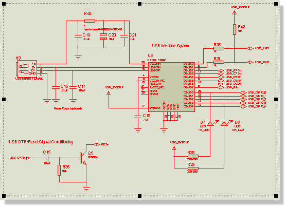
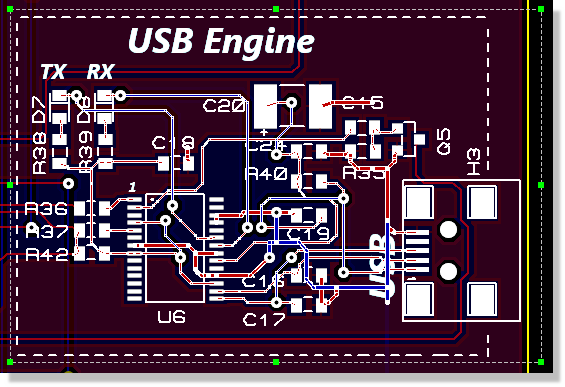
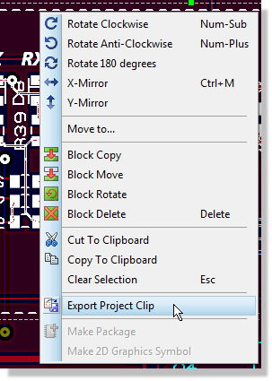
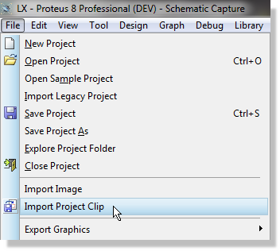
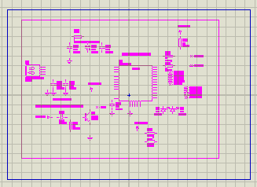
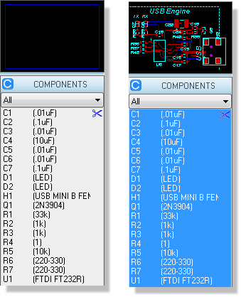
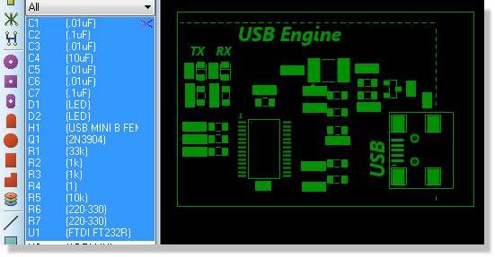
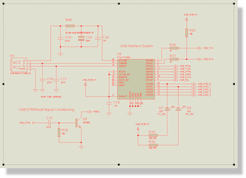
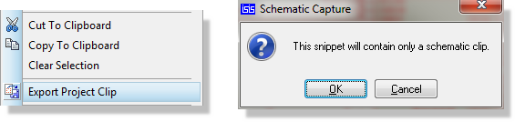
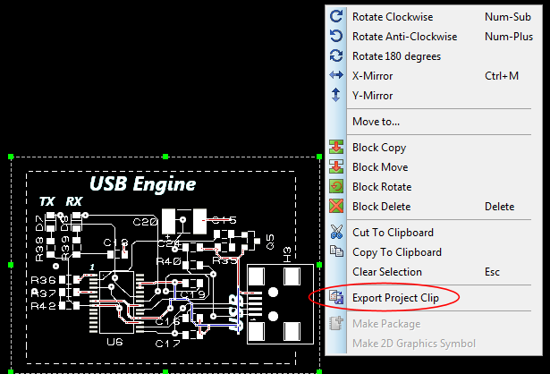

PROJECT CLIPS
Overview
Project clips (or snippets) provide a formal way to reuse parts of an existing project in future work. The basic idea is simple; select an area of schematic and/or an area of layout and then export them to disk for import into future projects. There are however some important rules and limitations which are explained below.
Project Clips Practical Examples
Schematic and Layout Project Clip
A schematic and layout project clip is the normal scenario. You have a section of circuitry and a corresponding section of layout that you either want several copies of in a board and/or you want to re-use in future projects.
Creating
To create a schematic and layout project clip
- Organise your schematic so that everything you want in the project clip is on a single sheet. Drag a selection box around the circuitry on the Schematic.

- The layout selection on the PCB must precisely match the schematic selection. If you are creating the project clip from a completed or existing project this will almost certainly require some surgery so save your project under a temporary name before you begin! Use the selection filter or simply move and delete as appropriate until you can drag a selection box around the parts and tracking that you want. When you are finished drag a selection box around the area of PCB.

- Right click inside the selection box and select the Export Project Clip command from the context menu. By default, this will save the project clip (*.PDSCLIP) into the SNIPPETS directory of your Proteus installation.

This is an operation involving a selection box on the schematic and a second selection box on the layout. If your monitor is big enough it's useful to split the layout tab into a separate frame so that you can see both at the same time.
You need to manually arrange the selection box on the layout as, apart from footprints, we cannot make decisions on which objects are included. Your selection box therefore tells us whether enclosed tracking, 2D Graphics, enclosed zones, etc. should form part of the project clip.
Rules for Project Clips
Importing
To import and place a schematic and layout project clip
-
Start from the schematic module and go to file menu and insert project clip command.

- Place the project clip on the schematic.

- The corresponding project clip will then appear in the parts bin on the PCB, denoted by a scissors icon at the right hand side.

- Click on any component part of the project clip and place on the layout.

Schematic Only Project Clips
A schematic only project clip is an area of schematic design that you wish to re-use in future schematics but for which there is no accompanying board layout in place. For example, an Arduino shield may be created for simulation purposes and re-used in several projects.
Creating
To create a schematic only project clip
- Organise your schematic so that everything you want in the project clip is on a single sheet. Drag a selection box around the circuitry.

- Right click inside the selection box and select the Export Project Clip command from the context menu. By default, this will save the project clip (*.PDSCLIP) into the SNIPPETS directory of your Proteus installation.

Importing
To import a schematic only project clip
-
Start from the schematic module and go to file menu and insert project clip command.
- Place the project clip on the schematic.
A schematic only project clip replaces the old Proteus 7.xx Section file technology. You can import existing section files via the Import Project Clip command and change the file type selector to section files. You should then create a project clip from the imported data.
Layout Only Project Clip
A layout only project clip is an area of PCB layout that you wish to re-use in future boards that does not have a direct schematic equivalent. This is both extremely unusual and potentially unsafe (annotation clashes) but is included here for completeness.
Creating
To create a layout only project clip
- Organise your layout so that everything you want in the project clip is on a single sheet. Drag a selection box around the circuitry on the layout and use the selection filter to define selected object types.
- Right click inside the selection box and select the Export Project Clip command from the context menu. By default, this will save the project clip (*.PDSCLIP) into the SNIPPETS directory of your Proteus installation.

Importing
To import a layout only project clip
- Start from the layout module, go to file menu and insert project clip command.
- Place the project clip on the layout.
Importing a PCB only project clip (or indeed copy and pasting parts of a layout) when you have a schematic and live netlisting is on can have unintended consequences. If no duplicates exist, the annotation of the clip is preserved but the footprints will bind to schematic components with that annotation which may well not be what you want to do. If you are unsure then you should first clear the netlist (tools menu in ARES), then import the project clip and fix up the annotation as desired and finally turn live netlisting back on to sync.
A layout only project clip replaces the old Proteus 7.xx Region file technology. You can import existing region files via the Import Project Clip command and change the file type selector to region files. You should then create a project clip from the imported data.
Rules for Project Clips
- A schematic and layout project clip requires that exactly the same parts are selected in both the schematic and the layout. You cannot have a selection on the layout that contains components with different part references than those selected on the schematic, nor can you have parts highlighted on the schematic which are not highlighted in the layout.
- A project clip on the schematic will operate only on the current sheet. Do not create a schematic snippet that contains a sub-circuit. Snippets do not propagate down through the schematic hierarchy and the sub-circuit contents will not be saved/imported.
- A schematic and layout project clip must first be imported into the schematic. This will initialise the parts such that placement on the layout is correct and there are no annotation clashes with other circuitry.
- If a power plane is not completely enclosed by the selection on the layout it will not be included in the project clip. The assumption is that the clip will be placed on a board where an equivalent plane is in use. If not, then clearly there will be missing connections on import.
- Once placed on the PCB layout the project clip is no longer a single entity. Each object (component, track, via, etc.) is moved or edited independently.
- If you import a project clip into a schematic sub-circuit it will replicate across circuits with the same name that are already placed. Subsequently adding a sub-circuit and giving it the same circuit name will not however automatically create a snippet instance. You should either import multiple snippets onto a root sheet or make very sure that you have all your sub-circuits in place before importing the snippet to one of them.
- If you are working with Assembly Variants and are exporting a project clip then the property set of the current variant will be exported. The fitted or not fitted status is not exported because the imported project clip will also import onto the base design of the destination.